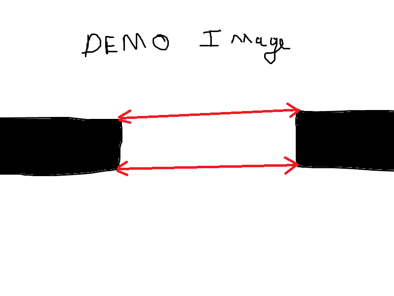
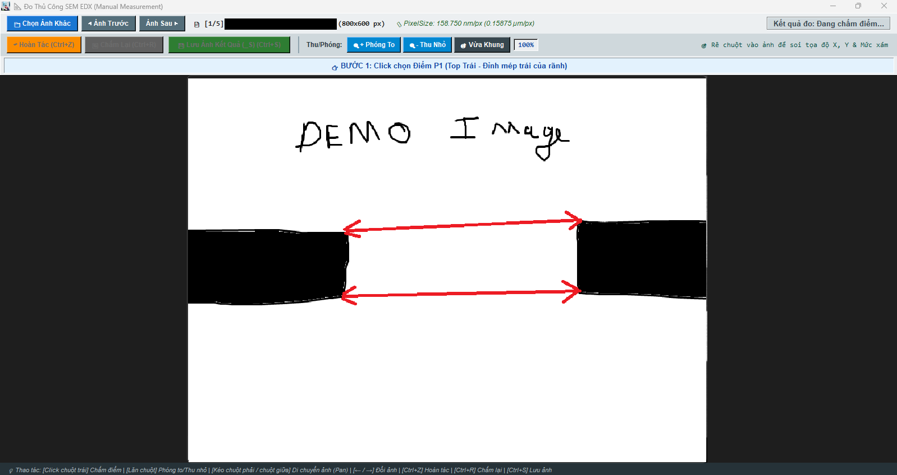

Hệ Thống Đo Tự Động
Đường Kính Lỗ SEM EDX
Giải pháp thị giác máy tính hình học đo tự động vi cấu trúc rãnh trên ảnh SEM: Tự nhận diện biên vách, tự bắt 4 góc mép, vẽ vạch đo Top/Bot và tính %Taper trong < 0.2s/ảnh.
Tự động hóa hoàn toàn quy trình chấm điểm thủ công 3-5 phút/ảnh:
Minh Chứng Kết Quả Đo SEM
Đo tự động hàng loạt kết hợp bộ công cụ đo thủ công kiểm định chất lượng.

Thuật toán tự động nhận diện biên vách, bắt 4 góc mép P1, P2, P3, P4, vẽ đường đo Top/Bot và tính %Taper:
- Phân đoạn vách: Tách khối vật chất và lọc sạch nhiễu.
- Bắt 4 điểm biên: Định vị P1, P2, P3, P4 trong vài mili-giây.
- Khử Substrate: Khóa 100% vùng chân đế, chống đo nhầm.
- Tính %Taper & Excel: Tự ghi kích thước lên ảnh và xuất file Excel.

Mô-đun kiểm định dành cho kỹ sư QA/QC khi cần soi chi tiết các mẫu đặc thù:
- Zoom & Pan 2000%: Phóng to chi tiết góc rãnh, rê chuột mượt mà.
- Pixel Inspector: Soi tức thời tọa độ (X, Y) và mức xám Grayscale.
- Chấm điểm 4 bước: Click 4 điểm để kiểm tra hoặc ghi đè kết quả.
- Đồng bộ Excel: Cập nhật kết quả thẩm định vào file Excel.
Mô Phỏng Đo Tự Động Thời Gian Thực
Bấm nút Bấm Đo Tự Động để quét ảnh, bắt 4 điểm và đo kích thước trong < 15ms.
Quy Trình Hoạt Động Của Hệ Thống (Workflow)
Chu trình 8 bước khép kín từ nhận diện thư mục sản xuất, xử lý quang học đa luồng đến tự động lập bảng báo cáo Excel.
Phân Tích Tên Thư Mục
Phân giải chuỗi thư mục đầu vào theo quy chuẩn: <ITEM>_<LOT>_<WORKER>_<MACHINE>_<STAGE>. Tự động nhận biết số máy (dấu +) để chọn mẫu báo cáo 1 máy đến 4 máy.
Đọc Tỷ Lệ PixelSize
Trích xuất trực tiếp thông số PixelSize (nm) từ file cấu hình .txt phần cứng của máy SEM (hỗ trợ utf-8, utf-16, cp1252), quy đổi sang µm/px = PixelSize / 1000.0.
Nhị Phân Hóa Mức Xám
Chuyển ảnh sang mức xám Grayscale và áp dụng ngưỡng phân tách Threshold = 120. Tách biệt vật chất thành vách (đen = 0) và nền khoảng trống lòng rãnh (trắng = 255).
Khử Khối Chân Đế Y ≥ 75%
Áp dụng Quy tắc chia trục Y làm 4 phần: Xóa 100% pixel đen ở khoảng Y ≥ 0.75H và lọc pixel nối từ đáy lên. Triệt tiêu hoàn toàn nguy cơ đo nhầm xuống chân substrate hoặc thanh banner.
Lọc Bụi & Nối Vách Nứt
Thuật toán đệ quy liên thông: Xóa bỏ các vết bẩn đen cô lập giữa lòng rãnh; đồng thời quét khoảng cách 12 px để bắc cầu (bridge dilation) các mẩu vách bị đứt đoạn về lại khối vách chính.
Tách Vách Trái / Phải
Tìm contour và phân nhóm vách trái (X ≤ 20% W) và vách phải (X ≥ 80% W). Gộp các mảng vách phân tách thẳng đứng (≤ 120 px) thành 2 mask độc lập.
Thuật Toán 3 Lớp Bắt 4 Điểm
Phối hợp 3 lớp không gian: Tìm hạt giống bằng điểm hướng + cửa sổ mật độ 30×30, dò lân cận 360° kèm khóa trục X, và cân bằng đồng phẳng trục Y khóa góc lệch ≤ 35°.
Xuất Ảnh _S & Báo Cáo Excel
Vẽ đường đo 2 đầu mũi tên viền đen và thông số lên ảnh _S.bmp. Tự động điền dữ liệu Top, Bot, công thức Excel =H/G*100 vào sheet tương ứng của mẫu báo cáo.
concurrent.futures.ThreadPoolExecutor(max_workers=32), xử lý một thư mục gồm 12 ảnh vi cấu trúc chỉ trong chưa đầy 1 giây.
Thuật Toán 3 Lớp Bắt 4 Điểm Pixel Góc Mép
Lý do thuật toán không bao giờ bắt trượt, không bị trượt vào sườn dốc và không bắt nhầm hạt bụi.
Tìm Hạt Giống (Seed Point) Bằng Điểm Số Định Hướng & Mật Độ Khối
Thay vì lấy tọa độ Min/Max đơn thuần (dễ dính pixel nhiễu), thuật toán giới hạn dải tìm kiếm 120 px và áp dụng hàm chấm điểm định hướng với trọng số ngang Wx = 1.0 và đứng Wy = 1.5:
Bộ lọc cửa sổ mật độ 30×30 px (Density Check): Quét ứng viên giảm dần theo điểm số. Điểm đầu tiên có tỷ lệ vật chất đặc ≥ 20% trong ô vuông 30×30 được chọn làm hạt giống seed_pt = (x_seed, y_seed). Điều này loại bỏ 100% các chấm bụi trôi nổi li ti.
Hội Tụ Cực Trị Mép Góc & Ngăn Trượt Sườn Rãnh
Từ điểm hạt giống, thuật toán tiến hành lặp tối đa 30 bước trong bán kính 15 px (q_size = 15) để hội tụ về đúng pixel mép góc gờ nhô ra ngoài cùng nhất:
- • Kiểm tra 8-láng giềng (has_enough_neighbors): Trong ô vuông 3×3 quanh pixel ứng viên, bắt buộc phải có ít nhất ≥ 3 pixel vật chất bao quanh. Quy tắc này loại bỏ hoàn toàn các pixel gai nhọn do nhị phân hóa.
- • Cơ chế Khóa trục X (x_lock_tolerance = 25 px): Ràng buộc |X_mới - X_seed| ≤ 25 px. Giữ chặt điểm đo tại mỏm gờ, ngăn không cho thuật toán bị tuột sâu xuống sườn dốc khi vách có độ dốc xiên lớn.
Khóa Góc Nghiêng Tối Đa 35° & Chống Đo Chéo Xuống Đáy
Trong tiêu chuẩn đo đạc bán dẫn, mặt trên (Top) và đáy (Bottom) luôn có tính đồng phẳng cao độ:
Cơ chế Force gióng ngang (find_x_at_y): Nếu θ > 35°, chứng tỏ một bên điểm đã bị nhảy tuột xuống đáy do khuyết tật vật liệu. Thuật toán tự động lấy điểm có cao độ Y nhỏ hơn (nằm trên chuẩn) làm mốc, gióng ngang qua mask đối diện để kéo điểm lệch về đúng mặt cắt chuẩn ngang.
Tại Sao Rule-Based CV Vượt Trội So Với AI Trong Bài Toán Này?
Bảng phân tích rủi ro & cơ chế bảo vệ cơ học đáp ứng tiêu chuẩn thẩm định hệ thống đo (Measurement System Analysis).
| Thách thức trong đo SEM | Giải pháp cơ học của phần mềm | Kết quả đạt được |
|---|---|---|
| Sai lệch độ phóng đại (Scale Drift) | Đọc trực tiếp thẻ PixelSize từ file metadata .txt phần cứng của máy SEM cho từng ảnh. |
Chính xác 100% tỷ lệ nm/px, không phụ thuộc vào zoom người dùng. |
| Đo nhầm xuống lớp chân đế (Substrate) | Hàm filter_bottom_connected_pixels + Quy tắc triệt tiêu 100% pixel đen ở Y ≥ 0.75H. |
Khóa 100% vùng đáy, không bao giờ bắt nhầm vào chân đế hay banner chữ. |
| Đường đo bị xiên chéo xuống dưới | Khóa góc nghiêng tối đa 35° (MAX_ANGLE_DEG = 35.0) kết hợp gióng ngang theo điểm chuẩn trên. |
Đường đo luôn song song với bề mặt cắt ngang tiêu chuẩn. |
| Bụi bẩn li ti trôi nổi giữa rãnh | Bộ lọc đệ quy liên thông + Cửa sổ mật độ 30×30 yêu cầu độ đặc vật chất ≥ 20%. | Lọc sạch 100% vết bẩn, không nhầm hạt bụi thành mép vách. |
| Đầu chóp rãnh bị vỡ hạt / đứt đoạn | Quét bán kính 12 px kết nối các mẩu đứt đoạn về lại vách chính (bridge dilation). | Bắt chính xác mỏm ngoài cùng, không bị hụt kích thước rãnh. |
| Chi phí phần cứng & Độ tin cậy AI | Thị giác máy tính thuần túy: Không dùng mạng Neural, không có hiện tượng ảo giác (hallucination), chạy tức thì trên CPU. | Chi phí đầu tư 0đ, độ lặp lại (Repeatability) đạt 100%. |